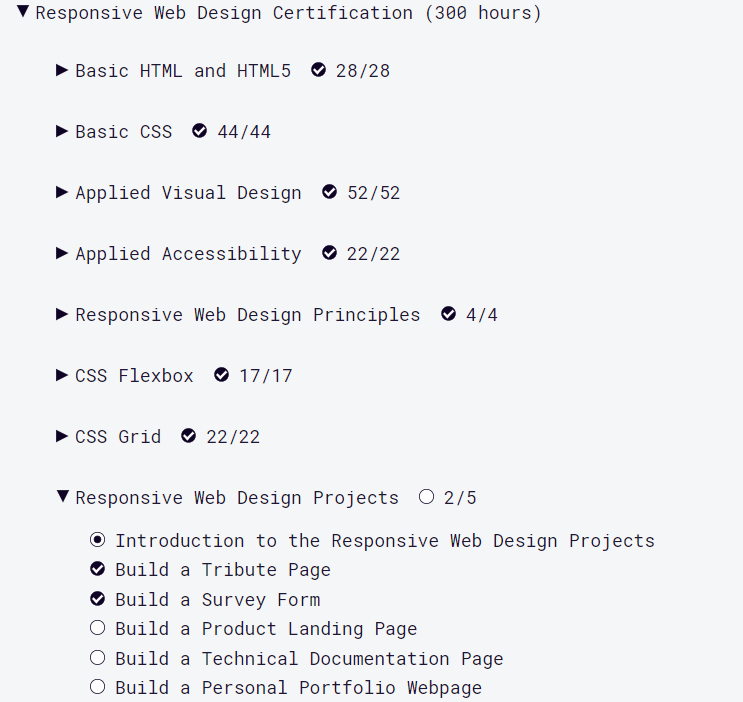
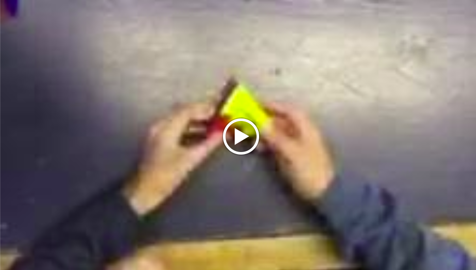

Intro to JS
This course I learned the basics of JavaScript. As a student this course taught me many things as it was the first one we did during the year. I got to learn a new language through coding it myself and seeing that code take shape right in front of me. I also learned that Khan Academy is a great learning enviroment and is more than just somewhere to go when I don't understand a math or science concept. After taking this course I now know that I am capable of doing many things with coding and specifically JavaScript.
Couldn't get a picture of it
Intro to HTML/CSS
This course I learned the basics of HTML/CSS. This course opened up many opportunities for me as a student. Previously we had only learned how to code programs/websites but through this course I found out that I can make website through programming too. In the future I can definitely use this knowledge of web development as I will probably want to make web pages during my free time to keep improving my skills.
Advanced JS: Natural Simulations
This course I learned more advanced uses of JavaScript. As a student I learned many new things from this course such as vectors which are very advanced. In the future if I countinue utilizing the things I learned I'm sure that I willbe able to create a lot more advanced and more interesting things.
Algorithms
This course I learned many algorithms that can be used in JavaScript. Going into this course I had already learned about some sorting algorithms such as quicksort and bubblesort. After taking this course I now know not only the two previously mention but additional ones such as mergesort, also the course also showed me how to do the two sorts I know in JavaScript and not just C++. This course was very useful because these sorting algorithms will definitely be very useful in the future because sorting list and other things can create many different things.

Advanced JS: Games & Visualizations
This course I learned how to make games with JavaScript. Making games have always been something I've done in the prevoius computer science courses I have taken but this course was very enlightning die to its visuals. Preiously I had been making mostly text based games or games with very simple pictures but this course inspired me to keep striving and making more games because with enough work I can make games that are both fun to play and are visualy appealing.

freeCodeCamp: Responsive Web Design Certification
This course I learned the basics of HTML/CSS. This was my second time learning HTML/CSS so my thoughts are about the same. One thing that was new was the enviroment, freeCodeCamp offers a different way of learning how to code, this is not a downside as it was quite refreshing to learning more about these languages on a different platform, freeCodeCampfeels more step by step whereas Khan Academy definitelyfeels a little bit more challenging, one downside however is that freeCodeCampdoes not offer as much visual components as Khan Academy but when in lacks in variety it's nice to see your website slowly being built up through every lesson. I think freeCodeCamp will most likely be a great option to learn code in the future in addition to learning through Khan Academy.

Course on Algorithms
This was our course on algorithms where we taught others how to solve the Pyraminx Duo with algorithms. This course helped my learning a lot because it opened up many doors. Teaching others my knowledge was something I never knew would be this interesting. Seeing others interested in the same things I am and working with them was a great opportunity for as I enjoy these types of things. In the future I can definitelyuse the skills from this course such as teaching others in many different enviroments.

Hackathon: Cubing Timer
This was our hackathon project. As a student I learned many things as we came along many hardships as a group. We had to come up with our own idea and make sure we had a plan to approch this idea. After completing this Hackathon I learned many things as a student, some skills that come to mind are: time management, cooperation, and organization. These skills were gained by working together on our cubing timer. For the future these skills will be very handy as they are all very beneficial to the working enviroment, without them working in the computer science field can be very difficult.

Pixel Sorting Creative Refactor
This is a creative refactor of the coding challenge I presented: Pixel Sorting. For my creative refactor I changed the sorting algorithm to quicksort. To do this I applied my knowledge of algorithms from the Khan Accademy course and changed the sorting algorithm. In the future I can see myself using the skills I learned from this coding challenge a lot because I think sorting algorithms are very important to know and the more I do know the more skilled I can be in coding.

Metaballs Creative Refactor
This is a creative refactor of the coding challenge: Metaballs. What I did was randomize the hue and saturation values so it would look like a retro television. As a student I learned more about different functions and how to apply them. In the future I can apply these functions to my coding.